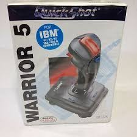
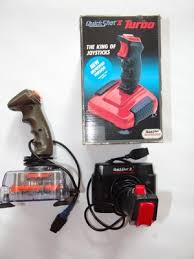

Hi. I would like to present my small collection of Quickshot & Quickjoy controllers (and try to add some info about that ones I don't have). I used to use few models in early 90's together with Amiga 500 and now collectiong models of this brand and others. Along with Quickshot my collection consist other well known brands like Competition Pro, MATT, etc.
For now I don't know why but some models are branded as Quickjoy. I am trying to buy (if there is good ocassion) controller together with box. Unfortunately I am still missing many models and don't even know many of them were manufactured. I'm not collecting controlers made for PC/IBM.
Particular models have very often beside product code also name (QS-111 is known as Quickshot II Turbo)
Feel free to contact me and leave feedback. Any info about topic of this site is welcome. I'll try to update this page and more informations about this amazing controlers. On the list below I am marking controlers I have as bolded and you can expect photo session of controlers made by me.
QS-111, Joy1
QS-122, Joy2
test
test test test